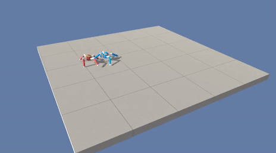

Robotics Collection
Collected by Jianan, 2019. 本章节会收录关于机器人学的材料，和Edge的区别在于本章节将侧重和个人的学习研究有关的材料。部分文字从原文直接引用，如有侵权，立即删除。本文仅供个人参考学习，不作商业用途。
- Robotics Collection
- 深度小文
- MBD
- 室内定位技术的比较
- 使用Unity ml-agent进行深度强化学习
- 无人系统(无人机)基于模型(Simulink/Matlab)的设计方法介绍
- 《动手学深度学习》
- AI算法工程师手册
- Python从新手到大师
- AI 学习路线参考
- Github| 最优控制、强化学习和运动规划
- 斯坦福2019强化学习课程
- 复旦大学邱锡鹏教授发布教科书《神经网络与深度学习》
- 数学各个研究方向
- 最佳机器/深度学习课程 Top 5
- Github清北浙大中科院课程
- Simulink 基于模型的设计视频教程
- QT无人机地面站设计与制作教程
- GAAS（Generalized Autonomy Aviation System）
- 多旋翼飞行器设计与控制 北航 全权
- 怎么和导师建立好关系
深度小文
- 20190925 无人机在大型复杂环境中的自主导航：深度强化学习方法
- 20190813 从游戏AI到自动驾驶，一文看懂强化学习的概念及应用
- 20190716 深度学习项目实践笔记 Hao Zhang 张皓
- 20190712 深度学习最强资源推荐：一文看尽 GAN 的前世今生
- 20190711 图灵机与控制论之分歧
- 20190710 像堆乐高一样：从零开始解释神经网络的数学过程 原文链接
- 20190709 什么是正态分布？为何如此重要？
MBD
- 全权
- 新飞哥，阿木实验室
- simulink PX4 embedded coder 官方手册
- 据说更易于维护
室内定位技术的比较
WiFi无线网络 Bluetooth 蓝牙 Zigbee 无线个人区域网 RFID 射频识别装置 UWB超宽带 VL可见光 声学信号 超声波
| 技术 | 最大范围 | 最大吞吐量 | 功耗 | 优势 | 劣势 |
|---|---|---|---|---|---|
| IEEE 802.11n802.11 ac802.11 ad | 室外250m室内 35m几米 | 600Mbps1.3Gbps4.6Mbps | 中等的 | 广泛可用，高精度，不需要额外的复杂硬件 | 容易产生噪音，需要复杂的处理算法 |
| UWB | 10—20m | 460Mbps | 中等的 | 不受干扰，高精度 | 使用范围较短，需要在不同的用户设备上安装额外的硬件，成本高 |
| 声学 | 几米 | 低—中等 | 针对专业的应用，高精度 | 易受声音污染影响，需要额外的锚点或硬件 | |
| RFID | 200m | 1.67Gbps | 低 | 低功耗，范围广 | 定位精度低 |
| 蓝牙 | 100m | 24Mbps | 低 | 高吞吐量，接收范围广，低功耗 | 定位精度低，易产生噪声 |
| 超声波 | 几十米 | 30Mbps | 低—中等 | 吸收相对较少 | 对传感器的安装位置依赖性很高 |
| 可见光 | 1.4km | 10Gbps | 相对较高 | 广泛可用，高精度和免受多径影响的潜力 | 功耗相对较高，适用范围受障碍影响，主要需要LoS |
| SigFox | 50km | 100bps | 非常低 | 接收范围广，低功耗 | 基站和设备之间的距离很长，容易因为建筑物墙壁的阻隔而导致室外到室内信号衰减 |
| LoRA | 15km | 37.5Kpbs | 非常低 | 接收范围广，低功耗 | 基站和设备之间的距离很长，容易因为建筑物墙壁的阻隔而导致室外到室内信号衰减 |
| IEEE 802.11ah | 1km | 100Kbps | 非常低 | 接收范围广，低功耗 | 并非完全为定位开发，在室内环境的性能表现仍有待观察 |
| Weightless | P模式2km，N模式3km，W模式5km | N,P模式100Kbps，W模式10Mbps | 非常低 | 接收范围广，低功耗 | 基站和设备之间的距离很长，容易因为建筑物墙壁的阻隔而导致室外到室内信号衰减 |
使用Unity ml-agent进行深度强化学习

无人系统(无人机)基于模型(Simulink/Matlab)的设计方法介绍
《动手学深度学习》
面向中文读者的能运行、可讨论的深度学习教科书。
本书将全面介绍深度学习从模型构造到模型训练的方方面面，以及它们在计算机视觉和自然语言处理中的应用。我们不仅将阐述算法原理，还将基于Apache MXNet对算法进行实现，并实际运行它们。本书的每一节都是一个Jupyter记事本。它将文字、公式、图像、代码和运行结果结合在了一起。读者不但能直接阅读它们，而且可以运行它们以获得交互式的学习体验。
AI算法工程师手册
作者华校专，曾任阿里巴巴资深算法工程师、智易科技首席算法研究员，现任腾讯高级研究员，《Python 大战机器学习》的作者。
这是作者多年以来学习总结的笔记，经整理之后开源于世。目前还有约一半的内容在陆续整理中，已经整理好的内容放置在此。 曾有出版社约稿，但是考虑到出版时间周期较长，而且书本购买成本高不利于技术广泛传播，因此作者采取开源的形式。 笔记内容仅供个人学习使用，非本人同意不得应用于商业领域。
笔记内容较多，可能有些总结的不到位的地方，欢迎大家探讨。联系方式:huaxz1986@163.com
Python从新手到大师
https://github.com/jackfrued/Python-100-Days
AI 学习路线参考
由AI 技术平台以及领域专家：Datawhale，ApacheCN，AI 有道和黄海广博士联合整理贡献，内容涵盖 AI 入门基础知识、数据分析\挖掘、机器学习、深度学习、强化学习、前沿 Paper 和五大 AI 理论应用领域：自然语言处理，计算机视觉，推荐系统，风控模型和知识图谱。是你学习 AI 从入门到专家必备的学习路线和优质学习资源。
Github| 最优控制、强化学习和运动规划
References on Optimal Control, Reinforcement Learning and Motion Planning
by Edouard Leurent
斯坦福2019强化学习课程
复旦大学邱锡鹏教授发布教科书《神经网络与深度学习》
https://nndl.github.io/
- 知乎地址：https://zhuanlan.zhihu.com/p/61591812
- 随书练习题：https://github.com/nndl/exercise
数学各个研究方向
最佳机器/深度学习课程 Top 5
首先让我们对今年 Top 5 的机器学习课程进行简要回顾：
Machine Learning（机器学习） - Coursera
https://www.coursera.org/learn/machine-learning
Deep Learning Specialization（深度学习专项课程） - Coursera
https://www.coursera.org/specializations/deep-learning
Machine Learning with Python（基于 Python 的机器学习） - Coursera
https://www.coursera.org/learn/machine-learning-with-python
Advanced Machine Learning Specialization（进阶版机器学习专项课程） - Coursera
https://www.coursera.org/specializations/aml
Machine Learning（机器学习） - EdX
https://www.edx.org/course/machine-learning
Github清北浙大中科院课程
https://github.com/QSCTech/zju-icicles
https://github.com/PKUanonym/REKCARC-TSC-UHT
https://github.com/lib-pku/libpku
https://github.com/USTC-Resource/USTC-Course
Simulink 基于模型的设计视频教程
无人机飞控学习，基于模型的设计（MBD、快速控制原型）学习人员（matlab/simulink学习）、嵌入式开发人员
QT无人机地面站设计与制作教程
QT地面站设计开发，QT界面设计，无人机飞控学习人员
GAAS（Generalized Autonomy Aviation System）
https://github.com/generalized-intelligence/GAAS
包含了 SLAM、避障路径规划、飞行控制模块、计算机视觉等人工智能技术。可为无人机实现三维空间感知、三维空间避障、自主重构飞行航线、复杂任务规划、视觉里程计（VIO）、实时建模与目标跟踪等功能。无人机开发者与硬件公司可以直接通过调用相关部分来获取自己需要的功能，而无需付出高昂的开发成本。GAAS 基于对商业公司友好的 BSD-3 协议开源，与 PX4 和 Mavros 采用了相同的协议。
多旋翼飞行器设计与控制 北航 全权
北航全权老师公开课